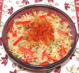

|
Sauerkraut SaladUkraine - Salata z Kvashenoyi Kapusty | ||||
| Serves: Effort: Sched: DoAhead: |
5 salad ** 2+ hrs hrs Best |
This is a summer salad in Ukraine, where sauerkraut is a very important ingredient (though more often served cooked). | |||
|
1 5 5 2 1 ---- |
# oz T T --- |
Sauerkraut (1) Scallions Bell Pepper, red Oil (2) Honey -- Garnish Pepper, black Paprika (3) |
Make - (1+ hrs - 10 min work)
|